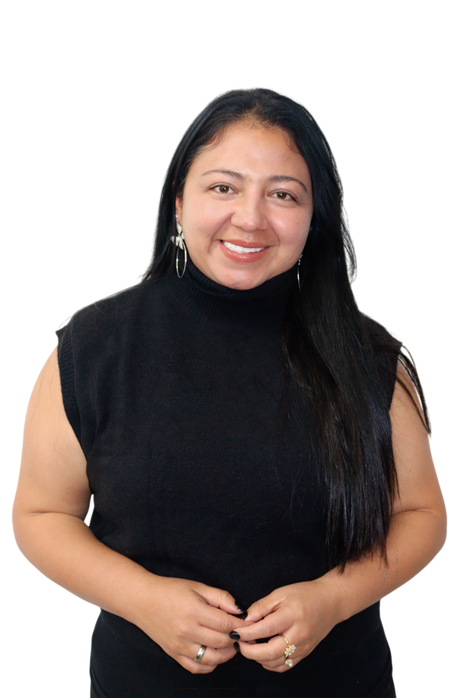

JUL 2024 — ENE 2025
EPS Salud Total
Experiencia profesional · Sector salud
01

Diseñadora gráfica senior con más de 10 años convirtiendo ideas y objetivos de comunicación en experiencias visuales claras, memorables y efectivas.
Profesional en Diseño Visual y Creativa Audiovisual, especializada en crear soluciones visuales que fortalecen la identidad, el posicionamiento y la comunicación de marca.
He trabajado con organizaciones de los sectores salud, educación y editorial, participando en procesos creativos de principio a fin: investigación, conceptualización, diseño, producción y entrega de artes finales.
Me caracterizo por el pensamiento creativo, el criterio visual, la atención al detalle y la capacidad de transformar objetivos de comunicación en propuestas gráficas y audiovisuales efectivas. Tengo experiencia en asesoría gráfica, atención al cliente y trabajo colaborativo.
Experiencia profesional · Sector salud
Experiencia profesional · Sector salud
Experiencia profesional · Educación digital
Experiencia profesional · Multimedia
Experiencia profesional · Educación
Experiencia profesional · Editorial
Los cargos específicos, funciones y logros de cada experiencia se pueden incorporar cuando se complete esa información.
Fundación Universitaria Compensar
Unipanamericana
Unipanamericana
Corporación de Educación Superior ISES
Corporación de Educación Superior ISES
Illustrator · Photoshop · InDesign · After Effects · Premiere · Animate · Captivate · Audition
Vyond · Mailchimp
Motion graphics · Inglés A2 · Finanzas personales · Positividad inteligente
Cursos realizados en Coursera, Open English y UBits Learning Solution.